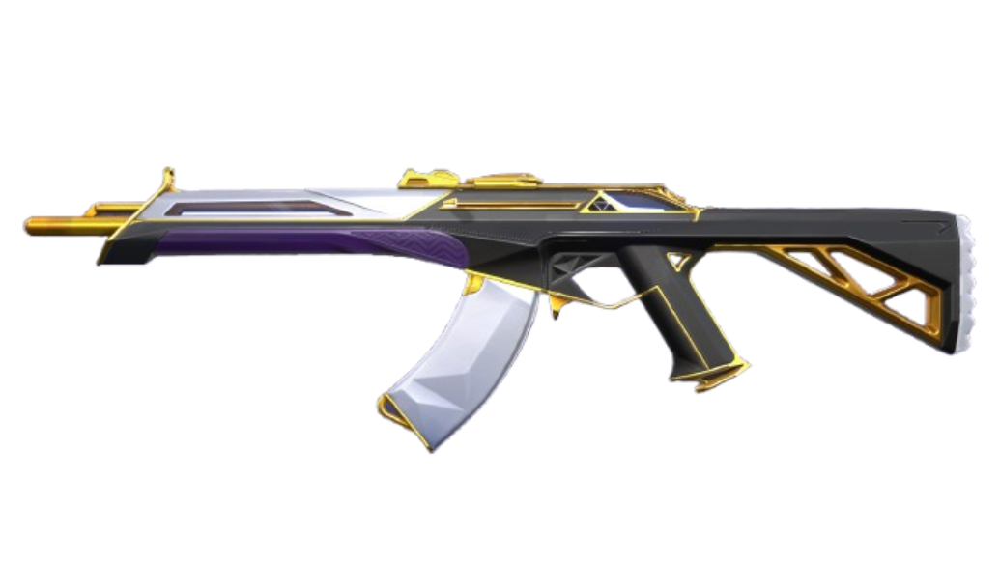
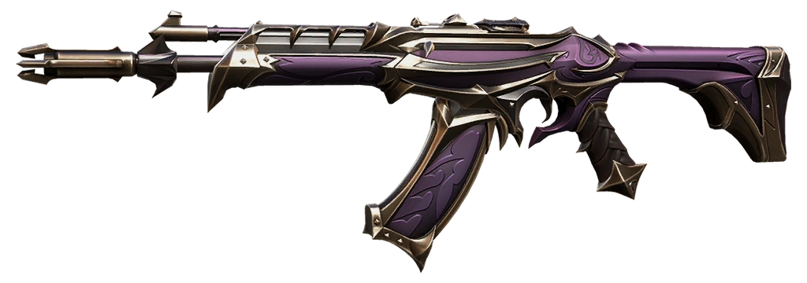
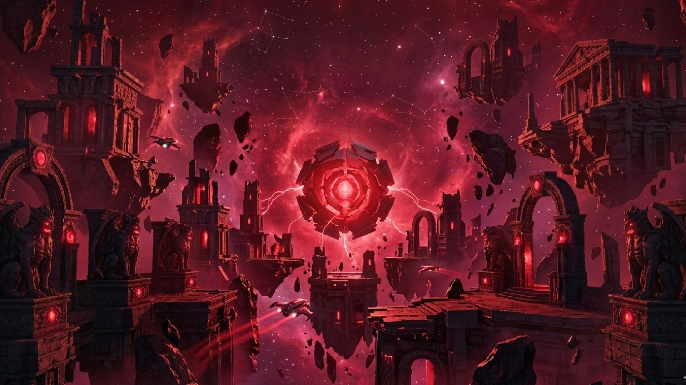
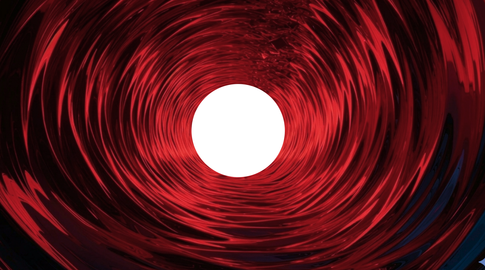
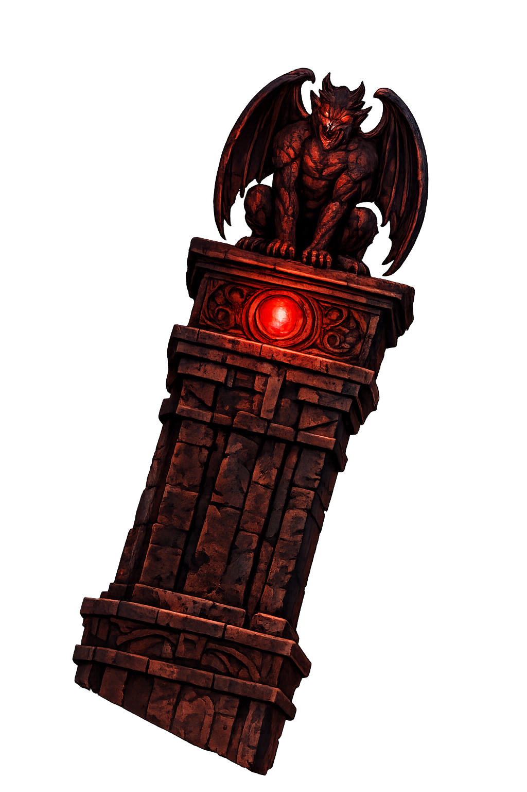

Este projeto foi desenvolvido como um estudo prático inspirado em Valorant, com o objetivo de aprimorar minhas habilidades em design e desenvolvimento front-end. Mesmo sendo um projeto de teste, ele foi pensado como um produto real, com foco em experiência do usuário, responsividade, identidade visual marcante e organização estratégica de layout. Mais do que um exercício, representa evolução técnica e a busca por criar interfaces cada vez mais profissionais e imersivas.
Um design futurista com energia radiante. A Prime Vandal combina elegância tecnológica com poder devastador.
Forjada nas sombras, a Reaver Vandal carrega uma aura sombria e um poder místico que ecoa a cada disparo.




Este projeto foi criado como um teste de estudo para explorar animações em websites utilizando GSAP, efeitos de scroll, ferramentas 3D e técnicas de design responsivo. A ideia foi exagerar nas animações e transições para experimentar diferentes possibilidades e entender melhor o comportamento da biblioteca em diferentes dispositivos. O objetivo principal foi praticar e aprimorar minhas habilidades em animações, interações visuais e integração de elementos 3D na web.
